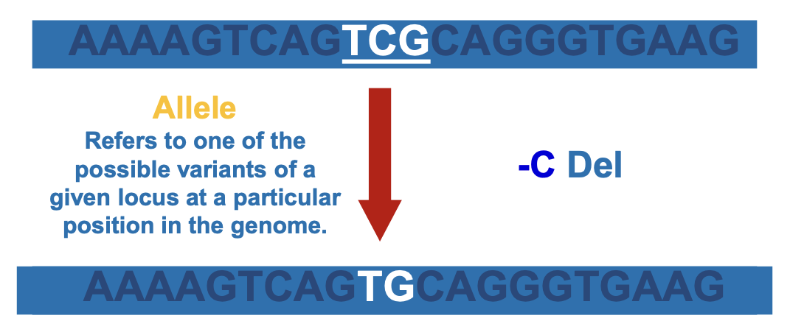

Manual
1. Introduction and Learning Outcomes
By the end of this module, you should be able to:
- Understand various types of variation and how they are ascertained.
- Understand how variant calls are made.
- Assess variant quality and visualise variants.
- Annotate variants and assess consequences.
2. DNA Variations: Definitions and Types
Mutations refer to any alteration in the DNA base sequence and can be broadly classified into germline and somatic mutations.
How to DNA sequences change?
Germline versus somatic mutations
Germline mutations occur in the egg or sperm cells and are heritable, meaning they can be passed on to subsequent generations. In contrast, somatic mutations arise in non-germline tissues and do not get inherited by offspring.
DNA replication errors are changes introduced into the genome during the process of cell division. These include de novo replication errors, mistakes made when DNA is copied, as well as structural changes such as recombination, gene conversion, and transposition. Additionally, non-replicative DNA damage can occur due to chemical exposure or radiation, independently of cell division. In sexually reproducing organisms, such mutations are only heritable if they occur in the gametes (sperm or egg cells), allowing them to be passed on to the next generation. Understanding the sources of these errors is crucial for studying genetic variation and disease.
Types of genomic variations
When examining the types of genomic variations, it is essential to differentiate between large-scale and small-scale changes. Large-scale variations include chromosomal gains or losses (such as aneuploidies), various forms of translocations (for instance, reciprocal and Robertsonian), and copy number variants (CNVs), which are duplications or deletions typically ranging from approximately 1 kilobase to several megabases—collectively accounting for roughly 12% of the human genome.
Structural variants (SVs), including insertions, inversions, translocations, and tandem duplications larger than 50 base pairs, also fall into this category. On the other hand, small-scale variations involve more subtle changes such as single nucleotide variants (SNVs), which are simple base substitutions (for example, A→C or G→T), indels that represent small insertions or deletions (less than 50 base pairs), multinucleotide polymorphisms (MNPs) which involve multiple adjacent base substitutions, and microsatellites or short tandem repeats (STRs). STRs are characterized by the repetition of small motifs of 2–6 base pairs—like the “GATA” sequence repeated 7 versus 8 times—which are inherently more variable. Notably, while single nucleotide polymorphisms (SNPs) are usually biallelic with a relatively low mutation rate (around 10^-8 per base pair per generation), STRs are multiallelic with higher mutation rates, making their ancestral states more challenging to infer.
To summarise:
Mutation / Variation: Any change in the DNA base sequence.
Germline mutation: Heritable variation present in egg or sperm cells.
Somatic mutation: Variation in non-germline tissues; not passed to offspring.
Copy number variants (CNVs): Duplications or deletions ranging from ~1 kb to many Mb, accounting for roughly 12% of the human genome.
Structural Variants (SVs): Insertions, inversions, translocations, tandem duplications, etc. (often >50 bp).
Single Nucleotide Variants (SNVs): Base substitutions (A→C, G→T, etc.).
Indels: Small insertions or deletions (<50 bp).
Multinucleotide Polymorphisms (MNPs): Multiple adjacent base substitutions.
Microsatellites / STRs: Short-tandem repeats of 2–6 bp repeated multiple times (e.g., “GATA” repeated 7 vs 8 times).

Large-scale genomic variations refer to substantial alterations in the structure or quantity of genetic material within a cell. These include gain or loss of entire chromosomes, chromothripsis (massive chromosomal rearrangements occurring in a single event), translocations, and other structural variants (SVs).


A key type of large-scale variation is Copy Number Variants (CNVs), which involve abnormal numbers of copies of specific DNA segments. CNVs can span from around 1 kilobase to several megabases and collectively account for approximately 12% of human genomic DNA. Structural variants are defined as DNA segments larger than 50 base pairs that differ from the reference genome in sequence content, order, or orientation, and they play a significant role in genetic diversity and disease susceptibility.
Structural variants

Translocation: A structural variation in which a segment of DNA is moved from one chromosome to another, often involving two different chromosomes.
Local Translocation: A DNA segment is relocated to a different position within the same chromosome, rather than between different chromosomes.
Tandem Duplication: A type of duplication where the copied DNA segment is inserted directly adjacent to the original sequence.
Dispersed Duplication: A duplicated DNA segment is inserted elsewhere in the genome, not next to the original sequence—can be on the same or different chromosome.
VNTR (Variable Number Tandem Repeat): Short sequences of DNA that are repeated in a tandem array; the number of repeats varies among individuals and can be used in DNA fingerprinting.
Deletion: A mutation in which a segment of DNA is missing or removed, potentially disrupting gene function or regulation.
Novel Insertion: A new DNA segment not present in the reference genome is inserted into a genomic location.
Repeat Insertion: Insertion of a repetitive DNA element, such as a transposable element or tandem repeat, into a new genomic location.
Inversion: A structural variation in which a segment of a chromosome is reversed end to end, altering gene orientation and potentially affecting function.
Small nucleotide variants (SNVs)
Small-scale variations refer to changes in the genome that affect a small number of base pairs. These include Single Nucleotide Variants (SNVs), where a single base is altered. SNVs can be further classified as substitutions (commonly known as SNPs), insertions, or deletions, with the latter two grouped as indels. Variations can also involve multiple bases, such as multinucleotide polymorphisms (MNPs), mini-satellites, and micro-satellites. These changes contribute to genetic diversity and can influence phenotype and disease. In diploid organisms, a variant is homozygous if both chromosomes carry the same base, and heterozygous if the bases differ. An allele refers to a specific version of a DNA sequence at a given locus in the genome.

Ancestral and derived alleles
Ancestral and derived alleles describe the evolutionary history of genetic variants. The ancestral allele represents the original state of a DNA sequence before any mutation occurred, while the derived allele is the new version that arose through mutation.

Microsatellites or Short Tandem Repeats (STRs)
Microsatellites, also known as Short Tandem Repeats (STRs), are short, repetitive DNA sequences. The number of repeats varies between individuals, making them useful for genetic fingerprinting. However, the flanking regions—where PCR primers bind—are conserved, allowing reliable amplification across different samples for analysis and comparison.

SNPs vs STRs
| SNPs | STRs |
|---|---|
| Usually biallelic; Seldom recurrent. | Multiallelic |
| Low mutation rate: 1-1.25 x 10-8 /bp/generation. | Higher mutation rate: 2 x 10-4 – 1.3 x 10-2 /marker/generation. |
| ~ 3,000,000 in humans | ~500,000 in humans |
| Ancestral state deduced from an out-group. | Difficult to deduce. |
Genetic makeup of an individual
In genetic analysis, we ascertain the genetic makeup of an individual, which refers to their specific DNA sequence. The human genome is diploid, meaning individuals inherit one set of chromosomes from each parent. A genotype describes the specific genetic constitution at a given position in the genome, while a haplotype refers to a group of linked variants (alleles) inherited together on the same chromosome segment. Haplotypes are particularly informative because they capture patterns of SNP co-occurrence and can often be represented as binary strings, with each position reflecting one of two possible alleles. Understanding genotypes and haplotypes is fundamental in population genetics, disease association studies, and ancestry inference.

3. Practical Applications of Variant Calling
Genetic data is essential for a wide range of applications that help us understand and utilize biological diversity. It enables disease diagnosis by identifying genetic mutations linked to specific conditions, supports genotype-phenotype association studies to uncover the genetic basis of traits, and advances pharmacogenomics by guiding personalized medicine based on genetic profiles. In DNA forensics, genetic markers are used for individual identification, while in population genetics and evolutionary studies, they reveal patterns of ancestry, migration, and species divergence. Additionally, marker-assisted selection leverages genetic information to improve breeding outcomes in agriculture by selecting individuals with desirable traits.
How do we detect change?

This image above illustrates the evolution of genotyping technologies. Previously, genotyping was performed on a small scale using PCR amplification and agarose gel electrophoresis, which allowed detection of specific variants (e.g., A or C alleles) in hundreds of individuals. Today, high-throughput platforms such as the Affymetrix Human SNP Array 6.0 and the Omni 5M Quad SNP Chip enable genotyping of millions of variants across thousands of individuals simultaneously. These modern microarray-based methods dramatically increase scale, efficiency, and data resolution, making them essential tools in large-scale genetic studies like genome-wide association studies (GWAS).

The image above compares next-generation sequencing (NGS) and traditional Sanger sequencing in detecting a specific A > C variant. The top panel shows NGS data with 29X coverage, where multiple aligned reads consistently support the C allele at the variant position. The bottom panel displays a Sanger electropherogram, where the base change is visible as a peak shift at the same position. NGS offers higher throughput and greater coverage depth, allowing for more sensitive and accurate variant detection across the genome, while traditional sequencing is limited to single-gene or small-region analysis.

4. Variant Calling Basics
Variant calling is the process of identifying differences in DNA sequences by comparing a sample’s sequence to a reference genome. The goal is to determine the genotype—the specific combination of alleles—at each genomic position. In diploid organisms, which carry two copies of each chromosome, genotypes are classified as RR (homozygous reference), RA (heterozygous), or AA (homozygous alternate), based on whether the alleles match the reference (Ref) or differ (Alt). This analysis provides insight into an organism’s genetic makeup, enabling downstream applications such as disease association studies, ancestry inference, and personalized medicine.

The Variant Call Format (VCF)
The Variant Call Format (VCF) is a standardized text format used to store genetic variation data, including single nucleotide variants (SNVs), insertions, deletions, and structural variants. Each entry captures information about genomic position, reference and alternate alleles, quality metrics, and sample genotypes. Tools such as VCFTools (http://vcftools.sourceforge.net/) and vcfCTools (https://github.com/AlistairNWard/vcfCTools) are widely used for processing, filtering, and analyzing VCF files.
Allelic depth
Allelic depth refers to the number of sequencing reads supporting each allele at a given genomic position. It is a key measure in variant calling, where variant depth typically indicates the average read coverage at that position, helping assess the confidence and reliability of the identified genetic variant.

Germline versus somatic mutations
Germline and somatic mutations differ in their origin and variant calling expectations. In germline variant calling, the alternate allele frequency (AF) typically aligns with predictable ratios: 0.0 for homozygous reference (RR), 1.0 for homozygous alternate (AA), and 0.5 for heterozygous (RA), with minor deviations due to sequencing errors and sampling variability. In contrast, somatic variant calling, often used in cancer genomics, must account for variable allele frequencies, as mutations can be subclonal (present in a subset of cells) and influenced by admixture of normal and tumor cells. This makes somatic variant detection more complex and requires sensitive analytical methods.

Naive variant calling versus fixed allele thresholds
Naive variant calling typically relies on straightforward interpretation of observed sequencing data, often assuming ideal conditions and using limited filtering or statistical modeling. In contrast, approaches using fixed allele thresholds apply predefined allele frequency cutoffs to assign genotypes—commonly using values like 0.0, 0.5, and 1.0 to denote homozygous reference, heterozygous, and homozygous alternate genotypes, respectively. While fixed thresholds simplify analysis, they may miss low-frequency variants or misclassify genotypes in noisy data, unlike more advanced methods that incorporate probabilistic models or quality metrics for greater accuracy.
There are several problems associated with traditional variant calling methods that rely on hard thresholds. First, they often undercall heterozygotes, especially in low-coverage data, where insufficient read depth can make it difficult to detect both alleles. Second, using fixed quality cutoffs may discard valuable information, potentially overlooking true variants that fall just below the threshold. Lastly, these methods typically provide no measure of confidence, making it difficult to assess the reliability of the genotype calls or prioritize variants for further analysis.

Base Quality Filtering


Before calling genotypes, it is essential to filter out low-quality base calls to ensure accurate variant detection. Sequencing errors are more likely to occur at low-quality positions, which can lead to incorrect genotype assignments. Base quality is measured using the Phred quality score, where higher scores indicate greater confidence in the accuracy of the base call. For example, a Q20 score corresponds to a 1% error rate (accuracy of 99%), while Q30 represents a 0.1% error rate. In practice, bases with a quality score below Q20 are typically excluded from analysis. The figure above shows how base quality filtering improves allelic count accuracy and genotype prediction. The accompanying plot of average quality by sequencing cycle illustrates a common pattern: base quality is highest at the start of sequencing and declines toward the end. Applying this filter helps reduce noise and increases the reliability of variant calling results.
Variant calling models
More sophisticated models apply a statistical framework
To determine: 1. the most likely genotype g ∈ {RR, RA, AA} given the observed data D
- and the genotype quality

5. Steps in Variant Detection
6. Common Sources of Error
7. Advanced Topics in Variant Calling
Somatic variant calling specifically aims to identify genetic variants present in tumor cells by comparing sequences from tumor samples against matched normal tissues. The primary objective is detecting mutations that may drive cancer progression. Because tumors are heterogeneous, subclonal variants—mutations present in only a subset of cells—often exhibit widely varying allele fractions, complicating their detection and interpretation. Specialized bioinformatics pipelines such as Mutect2 and Strelka2 have been developed to address these complexities and accurately distinguish true somatic mutations from background noise.
Indel calling presents unique challenges, notably due to elevated sequencing error rates in regions such as microsatellites and homopolymers, where accurate base calling is particularly difficult. Additionally, indels can be represented in multiple valid ways by different alignment tools, leading to inconsistencies in their annotation and interpretation. As a result, complex indel regions often suffer from low reproducibility, with significant discrepancies observed across different variant callers. Users are encouraged to validate indel calls rigorously, especially in clinical or sensitive research contexts.
Emerging approaches in variant calling are addressing these limitations. Local de novo assembly methods, implemented in tools like GATK’s HaplotypeCaller, Scalpel, and Octopus, reconstruct local genomic haplotypes directly from sequencing reads, helping resolve complex variants more effectively. Additionally, newer methods employ variation graphs—data structures that represent multiple known variants simultaneously—to improve alignment accuracy and variant calling performance, particularly in regions of high genetic complexity or variability. These innovative approaches promise to significantly enhance the accuracy and comprehensiveness of genomic analyses moving forward.
8. Assessing and Benchmarking Variant Calls
The transition/transversion (Ts/Tv) ratio is a critical metric used to assess the quality of variant calls. Transitions (Ts)—base substitutions within purines (A↔︎G) or pyrimidines (C↔︎T)—occur more frequently than transversions (Tv), substitutions between purines and pyrimidines. For high-quality SNP datasets in humans, a Ts/Tv ratio of approximately 2 to 3 is typically expected; deviations from this range can indicate underlying errors in variant calling.
Another key consideration is the concept of a callable genome, as certain regions of the genome are inherently difficult to analyze due to repetitive sequences, structural complexities, or extreme GC content. Not all genomic regions are equally accessible or “callable,” and thus it is beneficial to utilize established benchmark sets, such as the Genome in a Bottle project, which define high-confidence genomic regions suitable for accurate variant detection and performance assessment.
When evaluating variant-calling performance, metrics such as precision and recall become essential. Precision represents the proportion of called variants that are correct (true positives), while recall, also known as sensitivity, measures the proportion of true variants correctly identified. To accurately compute these metrics, benchmarking tools like hap.py or vcfeval are routinely employed, allowing researchers to systematically assess and optimize variant-calling workflows for reliability and accuracy.
9. Functional Annotation and Variant Consequences
Functional annotation of genetic variants is an essential step in understanding their potential biological impacts. Annotation tools such as BCFtools/csq, Ensembl Variant Effect Predictor (VEP), and ANNOVAR are commonly utilized to systematically determine the genomic context of variants, categorizing them as coding, intronic, untranslated region (UTR), or intergenic. These tools further predict the functional consequences of variants, distinguishing between synonymous changes, which do not alter the amino acid sequence, and non-synonymous or missense mutations, which result in amino acid substitutions. More severe mutations include nonsense variants, which introduce premature stop codons, and frameshift variants, which disrupt the reading frame of the protein. Variant pathogenicity is often classified into categories such as pathogenic, likely pathogenic, benign, likely benign, or variants of uncertain significance (VUS). These classifications integrate population frequency data, computational prediction models, family-based segregation analyses, and results from functional assays to provide meaningful insights into the clinical or biological relevance of each variant.
10. Population-Level Variant Data
Population-level variant datasets provide critical resources for interpreting genetic variation in a global context. The 1000 Genomes Project, for instance, encompasses genomic data from over 2,500 individuals representing 26 distinct populations worldwide, with an average sequencing coverage of approximately 7–8X. This extensive collection offers researchers a comprehensive snapshot of human genetic diversity, aiding studies in population genetics, evolutionary biology, and clinical genomics.
Complementary to the 1000 Genomes Project, resources like HapMap, HGDP-CEPH, and gnomAD further enrich our understanding of global genetic variation. The International HapMap Project, although now archived, was an early effort aimed at cataloging common single nucleotide polymorphisms (SNPs) across diverse human populations. The HGDP-CEPH panel provides valuable genomic data from a broad array of worldwide populations, offering insights into human evolutionary history and population structure. The Genome Aggregation Database (gnomAD) expands upon these earlier efforts by compiling allele frequency data from tens of thousands of sequenced individuals, greatly enhancing our ability to interpret genetic variants, understand their functional significance, and accurately determine their frequencies across different populations.
11. References and Additional Resources
Olson, N.D., et al. (2023) Nature Reviews Genetics 24:464–483.
The 1000 Genomes Project Consortium. (2015) Nature 526:68–74.
Cann, H.M., et al. (2002) Science 296:261–262. (HGDP-CEPH)
Ensembl Variation documentation: https://www.ensembl.org/info/docs/variation/index.html
BCFtools: https://github.com/samtools/bcftools
VEP (Variant Effect Predictor): https://github.com/willmclaren/ensembl-vep
gnomAD: https://gnomad.broadinstitute.org/about
For course-related inquiries, contact: qasim.ayub@monash.edu